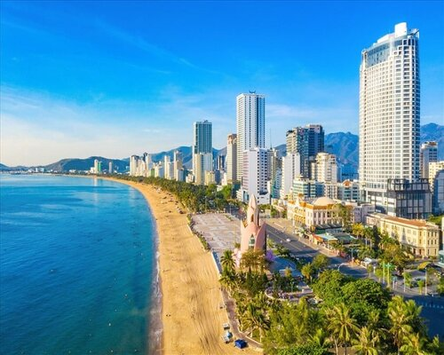

Nha Trang - Thiên đường biển nhiệt đới của Việt Nam
Chào mừng bạn đến với blog du lịch hôm nay, chúng ta sẽ khám phá về thành phố biển tuyệt vời tại miền Trung Việt Nam - Nha Trang. Nha Trang, nằm bên bờ biển Đông, là một ốc đảo thiên đường với bờ cát trắng mịn và nước biển trong xanh. Được biết đến với khí hậu ôn hòa quanh năm, Nha Trang là điểm đến lý tưởng cho cả những chuyến nghỉ dưỡng thư giãn và những cuộc phiêu lưu mạo hiểm.
Bãi Đá Ông Địa, Bãi Trước, và Bãi Đá Ông Địa là những bãi biển nổi tiếng, nơi du khách có thể thả mình vào làn nước biển dịu dàng và thưởng thức những khoảnh khắc yên bình. Đồng thời, các hoạt động như lướt sóng, đua thuyền kayak, và thậm chí là thăm các đảo lân cận như đảo Hòn Mun mang đến trải nghiệm tuyệt vời cho những người yêu thích thể thao dưới nước. Nha Trang không chỉ là biển cả mà còn nổi tiếng với những điểm du lịch lịch sử và văn hóa như Tháp Po Nagar Cham, Vinpearl Land, và Vinpearl Safari. Tháp Po Nagar Cham là di tích lịch sử của vương quốc Chăm Pa, mang đến cho du khách cái nhìn sâu sắc về nền văn hóa độc đáo. Nếu bạn là người yêu thực phẩm, Nha Trang còn là thiên đường của ẩm thực biển với những món hải sản tươi ngon như nem nước mắm, bún cá sứa, và hải sản nước mắm Phan Thiết độc đáo. Nha Trang không chỉ là điểm đến lý tưởng cho những kỳ nghỉ tuyệt vời mà còn là nơi để bạn tận hưởng sự pha trộn giữa văn hóa truyền thống và sự hiện đại, tạo nên một trải nghiệm du lịch độc đáo và đầy màu sắc. Hãy để Nha Trang làm nên những kí ức đẹp nhất trong hành trình của bạn.